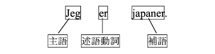
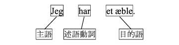
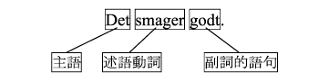
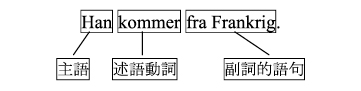
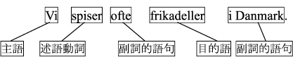

第２課では，平叙文，疑問文の語順について確認しましたが，ここではさらにデンマーク語の語順について学ぶことにしましょう．
―文の構成要素とは？―
まず最初に，デンマーク語の語順について理解するために，ここで文の構成要素について説明します．
文の構成要素は，それぞれの要素が文中でどのような働きをするかによって区別されます．いくつかの文を参考にしながら，文の構成要素について確認しましょう．
＜私は歌う＞
[synger: 動詞synge ＜歌う＞ の現在形]
上の文は，英語文法で言うところのS＋Vの文型をしています．つまり，主語と述語動詞で構成されています．次に，

＜私は日本人です＞
この文は，S＋V＋Cの文型をしています．つまり，主語＋述語動詞＋補語で構成されています．そして，

＜私はりんごを１つ持っている＞
この文は，S+V+Oの文型をしています．つまり，主語＋述語動詞＋目的語で構成されています．
また，文の構成要素として，次の文に見られるように，副詞的語句というものもあります．

＜それは美味しいです＞

＜彼はフランス出身です＞
副詞的語句は，godtのように一語である場合もあれば，fra Frankrigのように［前置詞＋名詞］という場合もあります．
― 文の構成要素と語順の関係 ―
デンマーク語では，上で見たような文の構成要素の種類によって，文中で置かれる場所というものが異なります．
ここでは，デンマーク語における完結文の語順に焦点を絞って見ていくことにしましょう．
完結文とは，その文が単独で存在することができ，別の文に従属しない文のことです．例えば，上に挙げた例文は全て完結文です．それでは，次の例文をまた構成要素に分けてみましょう．

＜私たちはデンマークではフリカデレをよく食べます＞
[ofte: 頻繁に]
まず，文の初めの要素として，「主語」が置かれています．この文の初めの要素が置かれる場所のことを「前域（文頭域）」と呼びます．さらに，「述語動詞」そして「副詞的語句 (ofte) 」が置かれている場所を「中域」と呼び，最後に「目的語」そして「副詞的語句 (i Danmark)」が置かれている場所を「後域」と呼びます．
表に示すと以下のようになります．
| 前域 | 中域 | 後域 |
要素 | 主語 | 述語動詞，副詞的語句 | 目的語，副詞的語句 |
語（句） | Vi | spiser ofte | frikadeller i Danmark. |
➢ 前域に置くことができる構成要素は１つだけです．
➢ 中域は必ず述語動詞が先頭にきます．
→述語動詞は，つまり，文全体の中で必ず２番目の要素となります．
→中域に置かれる述語動詞は，定形動詞です．定形動詞とは，時制を持った動詞のことで，デンマーク語では動詞の現在形，過去形，命令形を指します．
➢ 例えばofteのように必ず中域に置かれる副詞的語句があります．このような副詞的語句を特別に「中域副詞」と呼びます．
前域に「主語」が置かれることもありますが，デンマーク語では，原則として「定形動詞」及び「中域副詞」以外の要素であれば，「主語」以外の要素であっても，前域に置くことができます．それは，特に「主語」以外の要素を話題化させたいときに起こります．
| 前域 | 中域 | 後域 | ||
要素 | 副詞的語句 | 定形動詞 | 主語 | 中域副詞 | 目的語 |
語（句） | I Danmark | spiser | vi | ofte | frikadeller. |
訳 | デンマークでは，私たちはフリカデレをよく食べます． | ||||
| 前域 | 中域 | 後域 | ||
要素 | 目的語 | 定形動詞 | 主語 | 中域副詞 | 副詞的語句 |
語（句） | Frikadeller | spiser | vi | ofte | i Danmark. |
訳 | フリカデレは，私たちはデンマークでよく食べます． | ||||
このように，前域には，「副詞的語句」や「目的語」を置くこともできます．しかし，先にも述べた通り，前域には１つの構成要素しか置けないので，前域に「副詞的語句」や「目的語」が置かれている場合は，前域に「主語」を置くことはできないので，「主語」は中域に置かれます．
➢ 中域内の語順は，「定形動詞」・（「主語」）・（「中域副詞」）となります．
これまでに習った例文を使って，平叙文の完結文の語順を確認しましょう．
前域 | 中域 | 後域 | ||
定形動詞 | 主語 | 中域副詞 | その他の要素 | |
Jeg | hedder |
|
| Liva Jensen. |
Det | er |
|
| en ostehøvl. |
Den | er |
| selvfølgelig | til ost. |
Jeg | har |
|
| en lommeregner i tasken. |
Der | er |
|
| et bord og tre stole. |
I nærheden | er | der | også | en kirke. |
Først | skal | man |
| til Kongens Nytorv. |
Vi | skal |
| først | forbi Tivoli hen til Strøget. |
Så | går | vi |
| lidt ad Store Strandstræde. |
Så | er | vi |
| i Amaliegade. |
Det | spiser | man |
| meget i Danmark. |
Det | smager |
| ellers | godt. |
Det | lyder |
|
| lækkert. |
Det | smager |
| ikke | godt. |
それでは，次のような例文内の語順についても考えてみましょう．
Jeg vil godt hjælpe dig med at flytte. 私はあなたが引っ越すのを手伝います．
Jeg vil gerne se Den lille Havfrue. 私は人魚姫（の像）が見たいです．
Vi skal lave aftensmad hjemme hos mig. 私たちは私の家で夕食を作ります．
Jeg kan godt lide frikadeller. 私はフリカデレが好きです．
上記の例文では，それぞれに動詞にあたる要素が２つあります．
赤色表示のvil, skal, kanはそれぞれ現在形をしているので，これらが定形動詞です．そして先に確認したように，定形動詞は中域の先頭に置かれます．
次に，緑色表示のhjælpe, se, lave, lideはそれぞれ不定詞形をしています．不定詞形は，定形動詞ではなく，不定形動詞と呼ばれます．不定形動詞は，中域には置かれず，後域の先頭に置かれます．
まとめると以下のようになります．
vil, skal, kan → 現在形 → 定形動詞 → 中域の先頭＝文全体の２番目の要素
hjælpe, se, lave, lide → 不定詞形 → 不定形動詞 → 後域の先頭
前域 | 中域 | 後域 | |||
定形動詞 | 主語 | 中域副詞 | 不定形動詞 | その他の要素 | |
Jeg | vil |
| godt | hjælpe | dig med at flytte. |
Jeg | vil |
| gerne | se | Den lille Havfrue. |
Vi | skal |
|
| lave | aftensmad hjemme hos mig. |
Jeg | kan |
| godt | lide | frikadeller. |
― 前域の前に置くことができる要素：接続詞 ―
文を構成する要素には，接続詞というものもあります．ここでは，完結文の語順をとる接続詞について取り扱います．
これまでに習った例文から，次の例文を見てみましょう．
Der er en bred seng. Og der er også en lampe i loftet. Men der er ikke nogen tæpper på gulvet, så jeg vil selv købe et lille tæppe.
最初の文，Der er en bred seng.の語順に関しては，上で見たとおりです．それに続く，Og der er også en lampe i loftet. の文頭にある og は，＜そして＞ という意味を表す接続詞です．この og は前域の直前に置かれ，それに続く文は，完結文の語順になります．
接続詞 | 前域 | 中域 | 後域 | ||
定形動詞 | 主語 | 中域副詞 | その他の要素 | ||
Og | der | er |
| også | en lampe i loftet. |
また次に続く，Men der er ikke nogen tæpper på gulvetの文頭にある men は，＜しかし＞ という意味を表す接続詞です．この men も前域の直前に置かれ，それに続く文は，完結文の語順になります．
接続詞 | 前域 | 中域 | 後域 | ||
定形動詞 | 主語 | 中域副詞 | その他の要素 | ||
Men | der | er |
| ikke | nogen tæpper på gulvet |
最後に，残りの文，så jeg vil selv købe et lille tæppe の文頭にある så は ＜それで＞ という意味を表す接続詞です．この så も前域の直前に置かれ，それに続く文は，完結文の語順になります．
接続詞 | 前域 | 中域 | 後域 | |||
定形動詞 | 主語 | 中域副詞 | 不定形動詞 | その他の要素 | ||
så | jeg | vil |
| selv | købe | et lille tæppe |